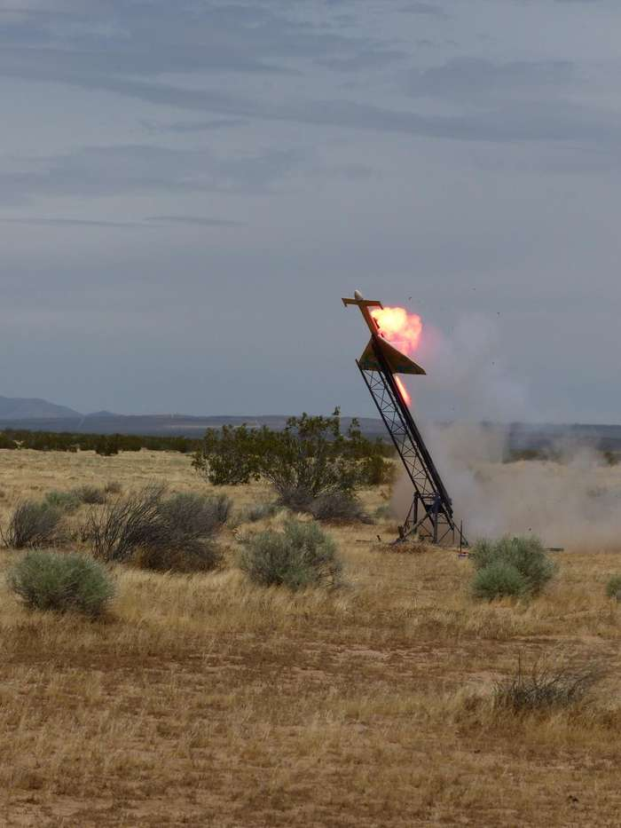
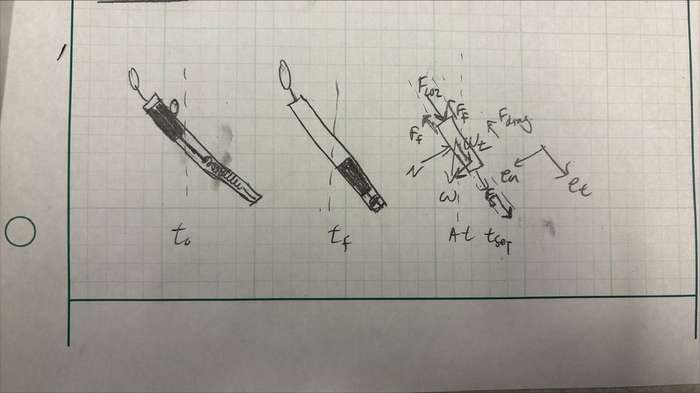
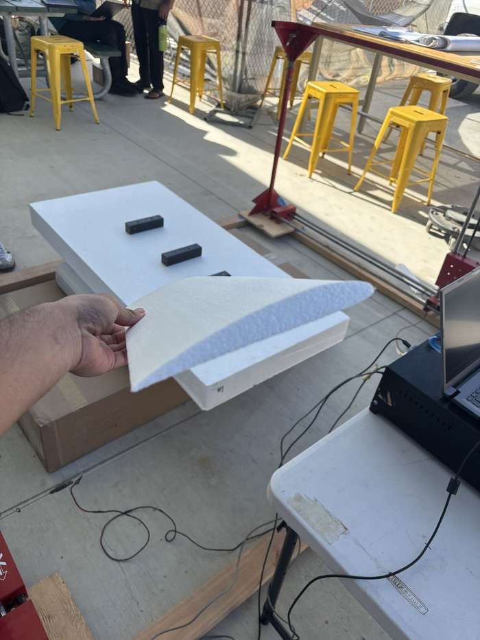
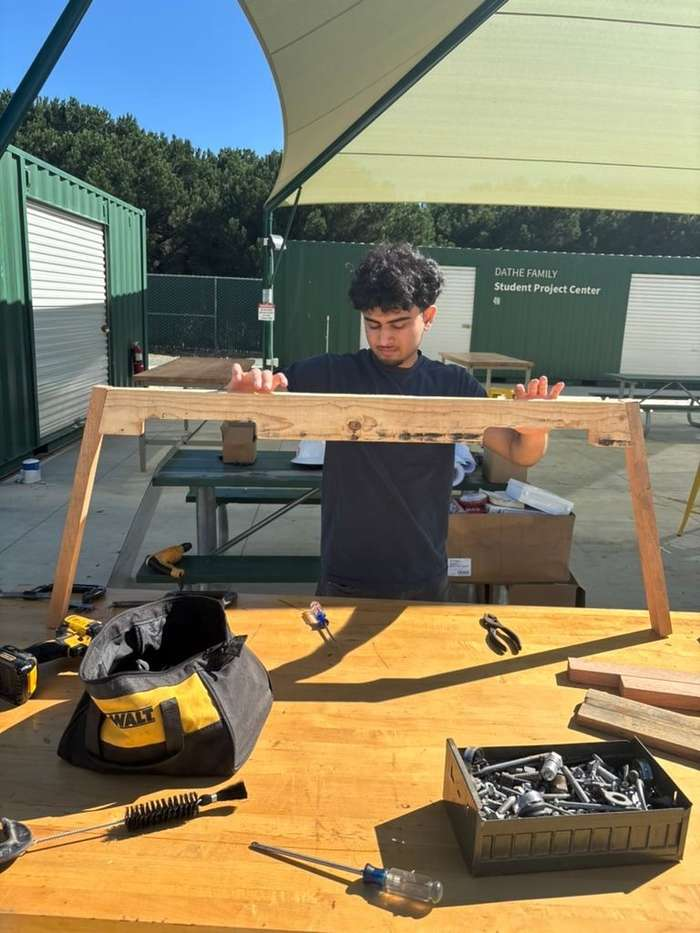
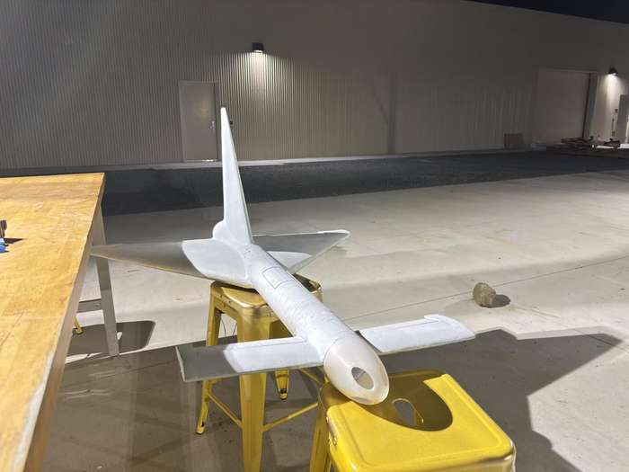
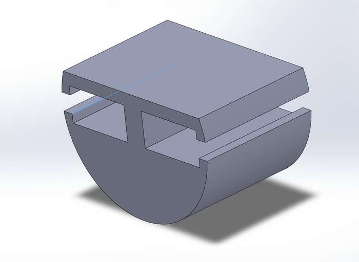
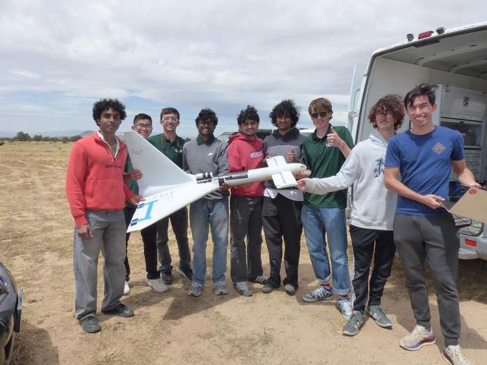

Jay
Panchal
I design mechanisms, machine and lay up the parts, and put them on hardware that flies. Currently co-leading stage separation for a three-stage, 40-lb rocket with Cal Poly Space Systems, and looking for a mechanical engineering internship or co-op.

Projects
Six projects across two areas. Each one opens to photos, process, and what I actually did.
Cal Poly Space Systems — Booster Team, Sep 2025 – present
Open project area →
Booster Separation MechanismConcept downselect and test-jig work for releasing two side boosters at apogee. Team lead. Mechanism designTest jig · Manual lathe → 1.2

CNC Hot-Wire AirfoilSolidWorks surface to G-code to a finished foam airfoil on a CNC hot-wire cutter. SolidWorks · DevFoamMach3 · G-code → 1.3

Canards & Vertical StabilizerCustom airfoil profiles and a 4.5-ft manual hot-wire rig built to cut them cleanly. Airfoil designHot-wire cutting · Fixturing → 1.4

Booster Assembly & FlightFoam cutting, fiberglass layups, finishing, motor and actuator integration, launch prep. Fiberglass & epoxyBondo · Wiring · Launch ops → 1.5

Servo HousingPrinted housing that aligns the flap servos inside the fuselage; three-plus iterations to fit. SolidWorksFDM printing · Fit iteration →
Engineering Design, CAD & Analysis — Coursework
Open project area → Bottling Station AssemblyFull SolidWorks assembly with design intent, fits and tolerances, GD&T, and defined drawings.
SolidWorks · GD&T
Bottling Station AssemblyFull SolidWorks assembly with design intent, fits and tolerances, GD&T, and defined drawings.
SolidWorks · GD&TDrawings · BOM →
Experience & Education
Co-Lead, Booster Team
Leading a five-person subteam through concept generation and downselect for stage separation on a 40-lb three-stage rocket. Selected an e-match-ignited pin ejection system to release both side boosters cleanly at apogee; modeled and prototyped the mechanism in SolidWorks and PLA before machining flight hardware from aluminum on a manual lathe.
Mechanical Engineering Analyst
Designed a front-bumper brake-cooling air scoop for a sports coupe in an eight-week team project, iterating three concepts to a final SolidWorks model and drawings inside fixed spatial and keep-out constraints. Coordinated interface geometry with the teammates designing the mounting bracket and hose neck, and 3D-printed the assembly to validate fit across all three components.
Manufacturing Member, Booster Team
Fabricated across every phase of booster manufacturing: machined canards on a CNC mill, designed a 4.5-ft hot-wire foam cutter for tapered airfoils and vertical stabilizers, applied fiberglass and epoxy layups, and designed a servo housing to align the servo motors with the airfoil flaps.
Maintenance Engineer
Diagnosed and repaired HVAC, plumbing, electrical, and water-heater systems across 40+ rooms, running root-cause analysis on equipment failures and closing 10+ service requests a week. Structural repairs with epoxy, Bondo, and surface finishing to bring equipment back to operating standard.
B.S. Mechanical Engineering
Coursework and project work centered on aerospace structures, mechanism design, and manufacturing processes.
Skills
Tools I've used on real parts, not a list of things I've heard of.
Design & documentation
- SolidWorks — parts, assemblies, surfaces
- GD&T, fits & tolerances
- Fully defined drawings & BOMs
- Design for manufacturing
Machining & CNC
- CNC mill — canards
- Manual lathe — aluminum flight hardware
- G-code, Mach3, DevFoam
- CNC hot-wire foam cutting
Fabrication & finishing
- FDM 3D printing (PLA)
- Fiberglass & epoxy layups
- Bondo, sanding, paint
- Fixture & jig building
Working with people
- Leading a five-person subteam
- Cross-functional interface coordination
- Technical presentations
- Client communication
About

I'm a mechanical engineering student at Cal Poly San Luis Obispo who likes taking a part from the first sketch to something you can hold — and then finding out what breaks when you test it. Most of my time outside class goes to the Booster Team at Cal Poly Space Systems, where I've gone from cutting foam and laying up fiberglass to co-leading the stage separation mechanism for our three-stage rocket.
Before that I spent two summers as a maintenance engineer at a hotel, which is where I learned to diagnose a failing system quickly and fix it with what's on the truck. That habit carries over to the shop.
Away from engineering: I played four years of high-school basketball and still follow the game closely, I'm into cars, and I run a social media account where I film and edit car content. Long-term plan is a garage of my own worth filming.
Get in touch
Open to mechanical engineering internships and co-ops for summer and beyond.
If you're hiring for mechanical design, manufacturing, or test roles, I'd like to hear about it. Email is fastest.
- Phone
- (805) 316-9705
- Location
- San Luis Obispo, CA